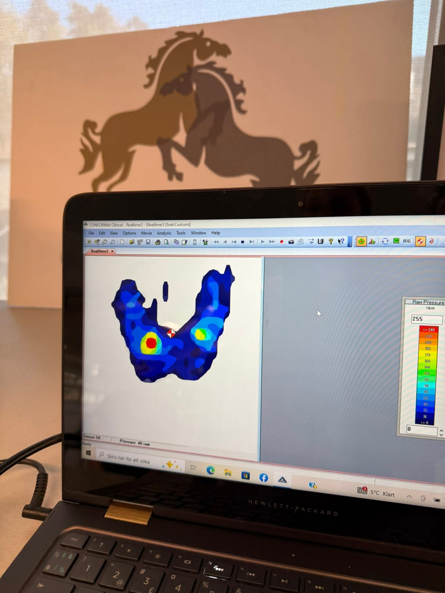

Från enskilda dressyrlektioner till clinics med sits och hjälpgivning i fokus – träning som bygger på lätthet, precision och respekt för hästen.
Enskild träning anpassad efter dig och din häst, oavsett nivå. Fokus på sits, balans och harmoni som ger det bästa samspelet.
Sits och hjälpgivning i fokus, ofta med Sitsprofilen och tryckmattan som verktyg – i din och hästens trygga hem- och stallmiljö.
Rid ditt program och finslipa delarna. Ta med protokoll om du vill ha en bedömning – eller skicka in en film för digital bedömning.
Ge bort en lektion eller kurs. Ett fint sätt att dela med sig av ridglädje.
Alla priser inkl. moms. Betalning sker via Swish efter avslutad lektion.
Sitsprofilen är ett unikt koncept som Lena själv har utvecklat, med fokus på ryttarens hjälpgivning. Med hjälp av en tryckmatta ser du på en skärm hur du fördelar vikten med sittbenen – i rörelser som galoppfattning, skänkelvikning och halvhalter.
Det gör ojämnheter och svagheter tydliga och ger en aha-upplevelse: du förstår varför hästen reagerar som den gör, och vi hittar snabbare vägen till bättre balans, medvetenhet och kommunikation. Bäst effekt får du med en dressyrlektion i direkt anslutning.
Boka Sitsprofilen
En harmonisk häst som presenteras med lätta, osynliga hjälper – i balans, bärighet och form.
Ett harmoniskt ekipage, korrektheten i ryttarens position och sits, samt ett diskret och effektivt inflytande över hjälperna.
Eftersom Lena är både dressyrtränare och dressyrdomare ser hon båda perspektiven på samma gång – vad du vill uppnå, och vad domaren faktiskt bedömer.
Bra dressyr handlar inte om tvång, utan om samspel. När hästen är i balans och rör sig fritt blir precisionen ett resultat av lätthet – inte tvärtom.
Jag utgår alltid från hästens förutsättningar och möter dig där du är. Målet är en strålande häst, en tryggare ryttare och rörelser i samspel som skapar magi.
Kontakta för att bokaHör av dig så hittar vi ett upplägg som passar dig och din häst.